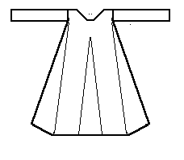

According to the typology given in Nockert, Type 2 Tunics are typified as
"Garments consisting of two straight-cut main pieces -- front and back -- joined together with a shoulder seam. Inserted beetween the main pieces are side gores which, together with the main pieces, help to make up the sleeve holes. Gores inserted to the same height in the main pieces, in the middle of both front and back. Neck slits and pocket slits can occur. Straight sleeve openings. Sleeves cut in one piece -- with rounding -- tapering downwards, and straight at the ends. Gore under the sleeves."
This is an outer garment, possibly a surcote or a gardecorps. Dating is difficult, but 13th century to the early 14th century seems to be reasonable. Those with pocket slits date to after the mid-13th century. The length of the garment and the width at its waist suggests some time before the mid-14th century. There are seven examples of this type of tunic; the Ronbjerg tunic, the Moselund tunic, and five of the Herjolfsnes tunics, including Herjolfsnes no.42,Herjolfsnes no.43, Herjolfsnes no.44, and Herjolfsnes no.45.
Go to Tunic Page or Proceed
Some Clothing of the Middle Ages - Tunics - Type 2, by I. Marc Carlson, Copyright 1996, 1997. This code is given for the free exchange of information, provided the Author's Name is included in all future revisions, and no money change hands-